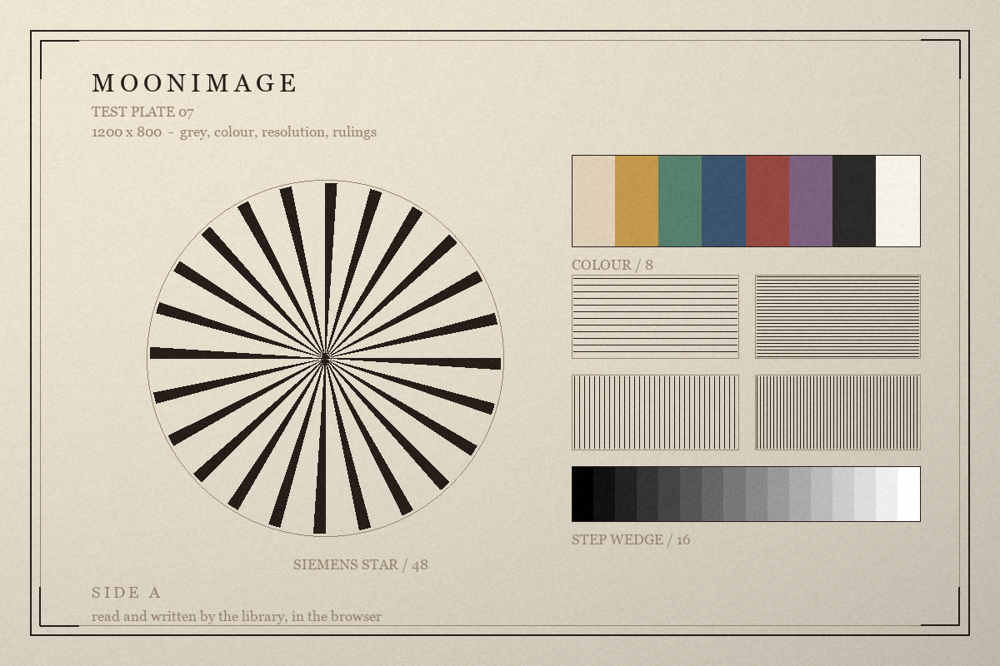

Image codecs, in pure MoonBit
Seven image formats, read and written.
PNG, JPEG, GIF, WebP, BMP, TGA and QOI, with the pixel arithmetic between them: layouts, transparency, rotation, cropping, scaling. One package, no C bindings.

The plate, read in this browser
decoded and written by the library, not by a server
Written back
| Format | Bytes | Round trip |
|---|---|---|
| reading the plate… | ||
The row above the rule is the file on disk: a PNG written by a drawing script at 1200 × 800. Every row below it is this library decoding that file, writing the pixels in another format, and reading them back. Exact means the samples came back identical; JPEG quantises, and GIF has two hundred and fifty-six colours to spend.
What it does
one package, seven codecs, the arithmetic between them
Seven formats, one call
decode looks at the first bytes and picks the codec;
encode takes a picture and a format. The same picture
goes out as PNG, QOI, BMP, TGA, JPEG or GIF, or as lossless WebP,
without the call site changing.
Pixels you can count
Nine layouts: grey or colour, eight or sixteen bits, with or without
alpha, and 32-bit floats. convert moves between them,
pixel gives back four numbers, pixels is
the bytes themselves.
Geometry
Mirror on either axis, rotate by quarter turns, crop to a rectangle, and scale with nearest, bilinear or Lanczos resampling. Each returns a new picture; the original is untouched.
Animation
GIF, APNG and animated WebP carry frames with delays, disposal and
blending. All three arrive as one shape, and compose
applies the rules in order to give the frames a viewer shows.
Refuses rather than guesses
A file this library will not read raises Refused with
the offset, what it found and what it expected. Limits
puts a ceiling on the allocation before a hostile header can ask for
it.
Metadata, kept
A PNG keeps its gamma, chromaticities, rendering intent, ICC profile and text chunks. A JPEG's EXIF orientation can be read on its own, or applied while decoding.
A smaller file, in one function
the whole of the call site, for a picture that has to travel
fn small_copy(file : Bytes) -> Bytes raise @moonimage.Refused {
let image = @moonimage.decode(file) // the format is in the bytes
let small = image.scale(320, 200) // bilinear, the default
@moonimage.encode(small, Format::Webp) // lossless, no options
}The guide starts from an empty project and ends with all of this, each step with the output it really printed.